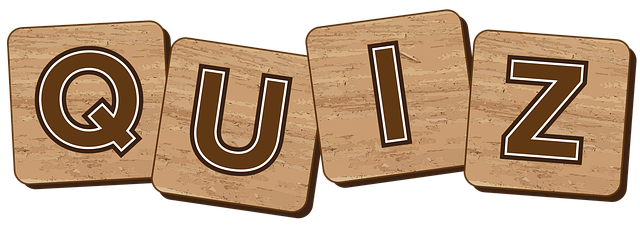

1.Asian Games
1. In which year was the first Asian Games held?
1958
1952
1953
1954
2. Which city hosted the 2018 Asian Games?
Beijing
Seoul
Jakarta
Bangkok
3. What is the official mascot of the 2023 Asian Games in Hangzhou, China?
Fura
Miraitowa
Trio of Robots
Momo
4. Which Asian Games sport features a 20-meter-long kite with a tail of 30 meters or more?
Kung Fu
Sepak Takraw
Dragon Boat Racing
Kite Surfing
5. In which Asian Games did cricket make its debut as a medal sport?
1982 New Delhi
1990 Beijing
2010 Guangzhou
2002 Busan
2. G20
1. When was G20 established?
1995
1999
1985
2000
2. Which of the following cities is organizing the recent G20 summit going to be held in 2023?
Brisbane
Antalya
Osaka
India
3. What was the theme of G20 held in India?
Shaping an interconnected world.
Fighting poverity with rigidity.
One Earth-One Family-One Future.
Making the world together.
4. Which of the following is not the member of the G20?
Indonesia
Singapore
Mexico
Turkey
5. Where was the first G20 summit held?
USA
Britain
Canada
France
3. Cricket World Cup
1. How many teams are participating in ICC world cup 2023?
7
8
9
10
2. Which cricket team has won most ICC worlc cup titles?
West Indies
India
England
Australia
3. Which of the following Indian player have got first “Man of the Tournament” Award in the ICC Cricket World Cup?
Sachin Tendulkar
Yuvraj Singh
Mohinder Amarnath
M.S. Dhoni
4. Who was the captain of the Indian cricket team in the ICC World Cup 1983?
Sunil Gavaskar
Kirti Azad
Kapil Dev
None of these
5. When was first ICC cricket World Cup started?
1982
1947
1960
1975
Submit